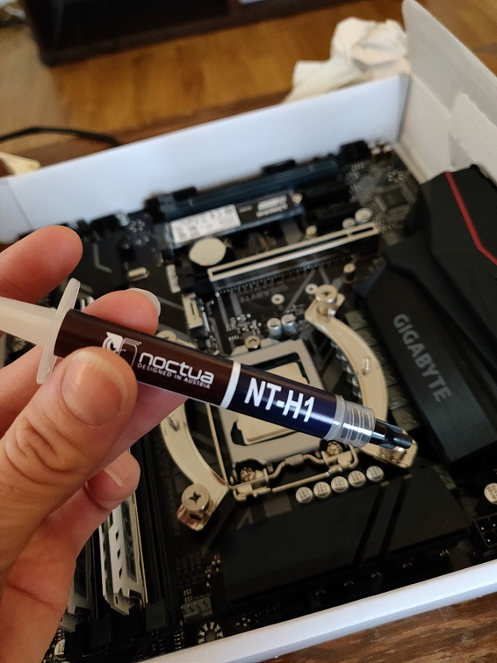

Att bygga en egen dator
Min tidigare stationära dator (aka gamingdator eller speldator), som jag hade ärvt av min storebror, gav upp för ett litet tag sedan. Skärmen blinkade till en sista gång, den skickade sin sista elektroniska puls, flimrade till och slocknade för att aldrig tändas upp mer. Diverse återupplivningsförsök initierades, men utan resultat. I det omfattande felsökningsarbetet som följde konstaterades det att det var väldigt mycket som det skulle kunna vara fel på och att det helt enkelt skulle bli billigare och smidigare att bara köpa en ny. Därför har jag givit mig på den digra utmaningen att bygga min egen dator från scratch.

Här är då min lilla egna build som tilldelades namnet “Annas rosa supermaskin” av min pojkvän. Att ha byggt sin egna dator känns verkligen som en viktig "achievement unlocked" och next-level för min nördighet. Till min hjälp har jag dock haft både pojkvän och storebror och det hade tagit ungefär 100 gånger längre tid om jag hade byggt den helt själv. Med deras hjälp tog det istället kanske 4 timmar totalt inklusive lite amatörmässig cable management (som annars kan ta hur lång tid som helst). Som min storebror uttryckte det: “skillnaden mellan pros och amatörer är nivån av cable management”. Jag använde mig av Inet.se och jag är supernöjd med dem och kan varmt rekommendera dig att köpa din dator hos dem. De erbjuder en att bygga själv, men de kan också bygga den åt en för omkring 700 kr (vilket såklart inte är lika kul, men desto mindre tidsödande).
Här är en länk till en jättebra introduktions- och instruktionsvideo på Youtube för dig som är intresserad av att bygga din egen dator.

Här är länken till min build på Inet.
Lista på mina datorkomponenter:
- Grafikkort: NVIDIA GeForce GTX1060 Dual med 3 GB GDDR5
- Chassi: Cooler Master MasterBox Q300P
- Moderkort: Gigabyte Z390 M Gaming
- Processor: Intel Core i5 9600K 3.7 GHz 9MB
- Hårddisk: Kingston A1000 480GB M.2 NVMe
- Operativsystem: Windows 10 Home Svensk 64-bit OEM
- Nätverksaggregat: Corsair RM750X 750W v2
- Processorkylare: Noctua NH-U9B SE2


Att applicera kylpasta.


Grafikkortet hade jag sedan tidigare, men i övrigt har jag köpt allting nytt. Jag behöver eller vill inte ha några värstinggrejer och tror att jag har lagt mig på en rimlig nivå för mitt behov. Den allmänna motiveringen till mitt val av komponenter är att de är tillräckligt bra till ett rimligt pris. Chassit köpte jag för att jag tyckte att det var fint och lite annorlunda. Dock hade det en ganska jobbig och ovanlig formfaktor (typ chassi-standard), vilket gjorde att vissa komponenter eventuellt blev onödigt dyra för att passa in i chassit. Så himla bra med Inet att de varnade en för om komponenter inte passade ihop, vilket jag troligtvis annars hade upptäckt först när jag skulle försöka sätta ihop dem. Vad gäller operativsystem hade jag egentligen principiellt föredragit Linux, men även jag måste inse mina begränsningar och vara ödmjuk inför det faktum att Linux hade blivit onödigt komplicerat givet mina behov.
I och med byggandet har jag fått en helt annan respekt, förståelse och fascination för datorer och datornördar, till vilka jag numer kanske även måste räkna mig själv. Jag är superfascinerad över mekaniken som krävs för att producera alla dessa ettor och nollor. Jag är också fascinerad över alla hundratals olika typer av standarder, uttag och kopplingar som finns. Som jag förstår det har det skett väldigt lite utveckling kring hårdvarans utseende och sammansättning och allting har i princip sett likadant ut de senaste trettio åren, medan det uppenbarligen har skett desto mer på mjukvarufronten. Medan man bygger känns det verkligen enfaldigt att koppla ihop en tunn och lite böjlig sladd på en vass och mantlad bräda, men samtidigt känner man sig stum av beundran för den otroliga beräkningskraft som den lilla anordningen trots allt besitter. Slutligen, oavsett om man programmerar, gamear eller vad man nu använder sin dator till så känns det så mycket coolare att göra det på en dator som man har byggt själv. :)
Lycka till med ert egna byggande så hörs vi på Steam. Där heter jag Lionesse och just nu spelar jag mest Dota 2 och Counter-strike Global Offensive. :)
/Anna